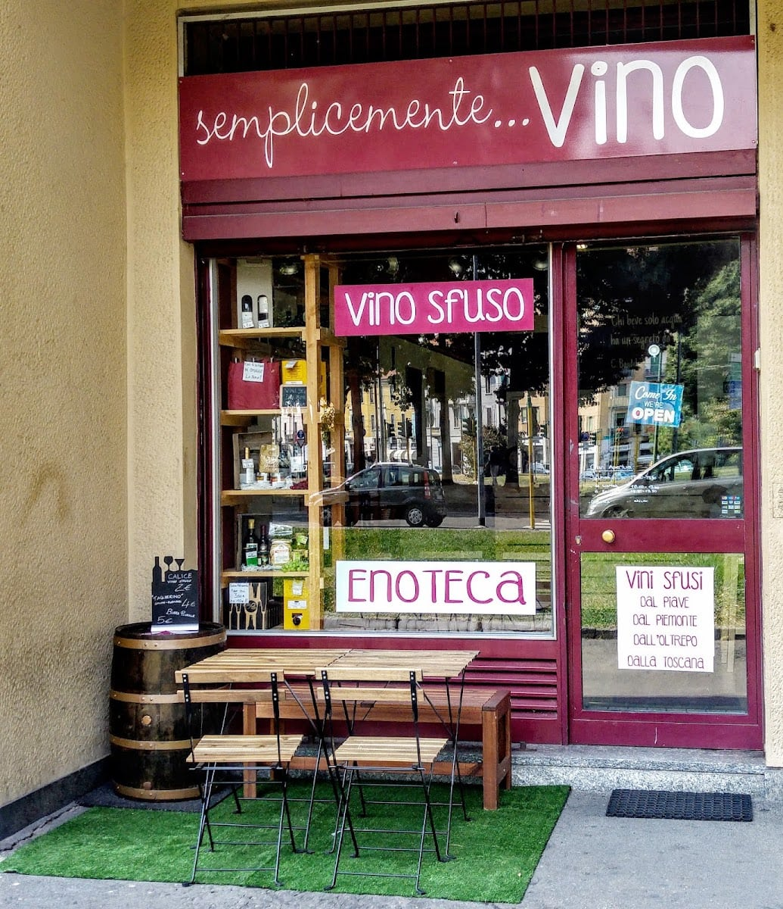
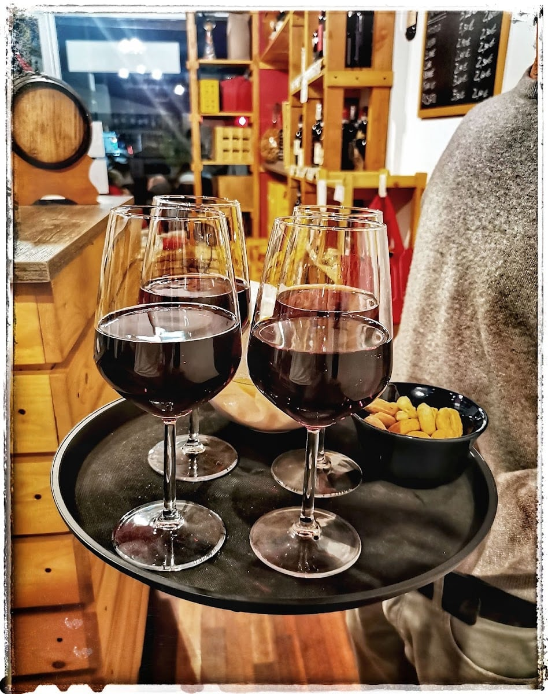
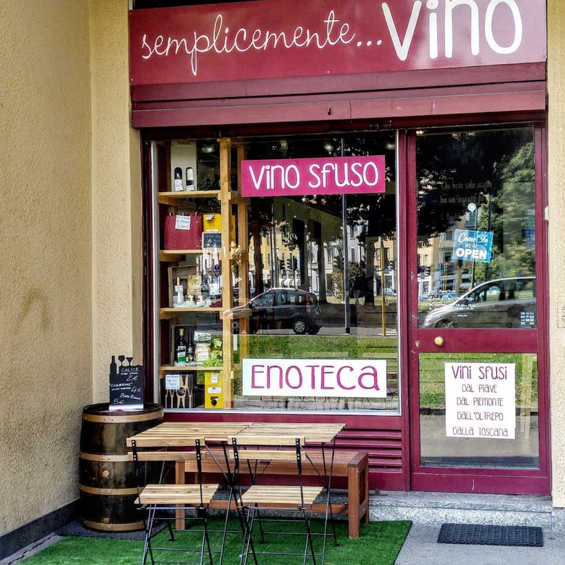
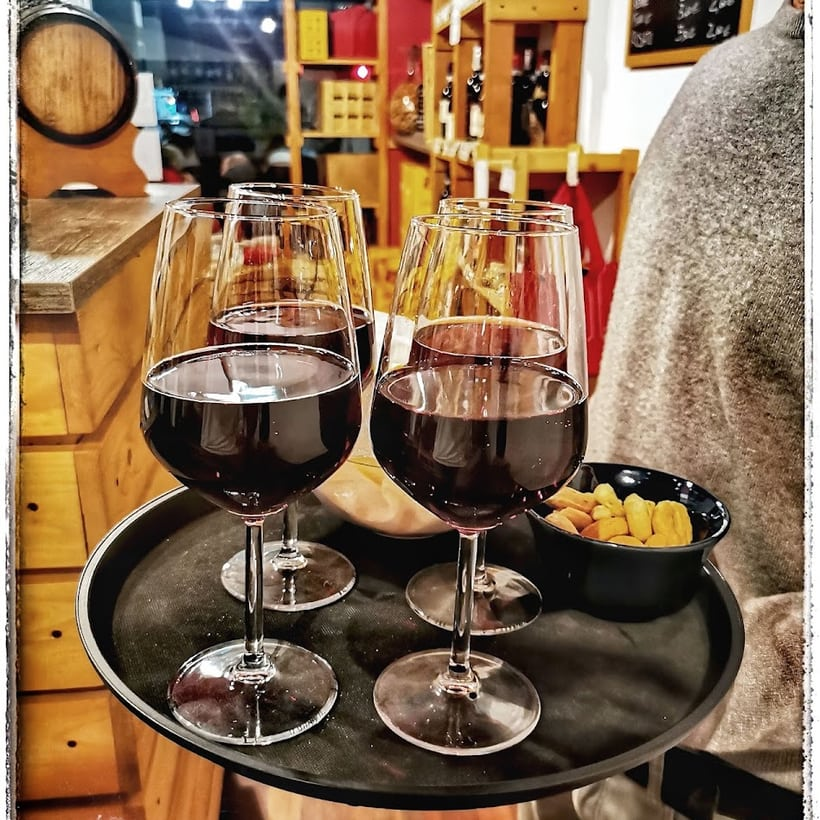
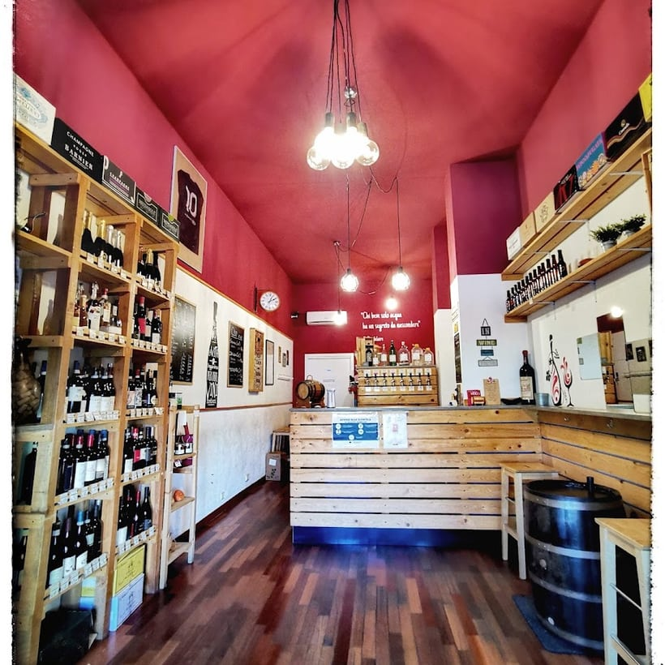

4,6 · 206 recensioni
L'enoteca di quartiere, col vino sfuso
semplicementeVino
Vino sfuso dal Piave al Piemonte a prezzi onesti, bottiglie, taglieri e un calice tra amici. A San Siro, come una volta.
Il vino sfuso
Come una volta
Porti il tuo contenitore, noi lo riempiamo. Il vino sfuso di una volta, buono e onesto, da bere ogni giorno senza pensarci troppo.
E se non hai la damigiana, va bene lo stesso: c'è la bottiglia, o un calice al banco tra due chiacchiere.
Vini sfusi
- dal Piave
- dal Piemonte
- dall'Oltrepò
- dalla Toscana
un litro di rosso ~8 €
Cosa trovi
Non solo sfuso
Le bottiglie
Un'ampia scelta di etichette a prezzi onesti — «vini ottimi nel rapporto prezzo qualità», come dicono i clienti.
Taglieri & aperitivo
Taglieri di piccoli produttori e un paio di angoli per l'aperitivo: un calice, due stuzzichini e i tavolini fuori d'estate.
Confezioni regalo
Belle confezioni regalo da comporre con Alessandro: il pensiero giusto per chi ama il buon vino.

L'oste
Alessandro, di cui ti fidi
A gestire l'enoteca c'è Alessandro, oste gentile e competente: «vi potete fidare di lui sulla scelta dei vini», scrivono i clienti. Digli cosa ti piace e cosa mangi, e ci pensa lui.
Un'enoteca a conduzione familiare dove, dopo il primo calice, ci si sente come a casa. Per questo è «l'enoteca del cuore» di mezza zona San Siro.
La bottega
Uno sguardo dentro



Dicono di noi
4,6 ★ su 206 recensioni
«Posto molto easy dove prendere del buon vino sfuso. Alessandro è un oste gentile e competente: vi potete fidare di lui sulla scelta dei vini.»
Anna Cristina · Local Guide
«Enoteca del cuore. Un posto dove a Milano è possibile bere del buon vino a prezzi umani. Personale simpatico e gentile.»
Marco T. · Local Guide
«È la mia enoteca preferita in zona San Siro. Il personale è simpaticissimo e c'è un'ampia scelta di vini a un prezzo assolutamente onesto.»
Lucia C. · Local Guide
«Sembra di essere a casa: i proprietari sono molto carini e disponibili, con i tavolini fuori all'aperto. È diventato il nostro posto di ritrovo.»
Crys · Local Guide
Dove & orari
In Via Domokos, a San Siro
Via Domokos 4, angolo Piazza Carlo Amati, 20147 Milano · zona San Siro, sul primo tratto di Via Novara
…
| Lunedì | 15:30 – 20:30 |
| Martedì | 10:30 – 13 · 15:30 – 20:30 |
| Mercoledì | 10:30 – 13 · 15:30 – 20:30 |
| Giovedì | 10:30 – 13 · 15:30 – 20:30 |
| Venerdì | 10:30 – 13 · 15:30 – 20:30 |
| Sabato | 10:30 – 13 · 15:30 – 20:30 |
| Domenica | Chiuso |
Domande frequenti
Fate vino sfuso?
Sì, è la nostra specialità: vino sfuso dal Piave, dal Piemonte, dall'Oltrepò e dalla Toscana, a prezzi onesti. Porti il contenitore e lo riempiamo — un litro di rosso costa pochi euro.
Si può bere un calice sul posto?
Sì: abbiamo un paio di angoli per l'aperitivo con calice e stuzzichini, e i tavolini fuori d'estate. Per il tavolo basta una chiamata.
Vendete anche bottiglie e confezioni regalo?
Sì: un'ampia scelta di bottiglie a prezzi onesti, taglieri di piccoli produttori e belle confezioni regalo.
Che orari fate?
Lunedì 15:30–20:30; da martedì a sabato 10:30–13:00 e 15:30–20:30. La domenica siamo chiusi.
Dove siete?
In Via Domokos 4, angolo Piazza Carlo Amati, a Milano, zona San Siro / Via Novara. Chiama 333 748 0015.